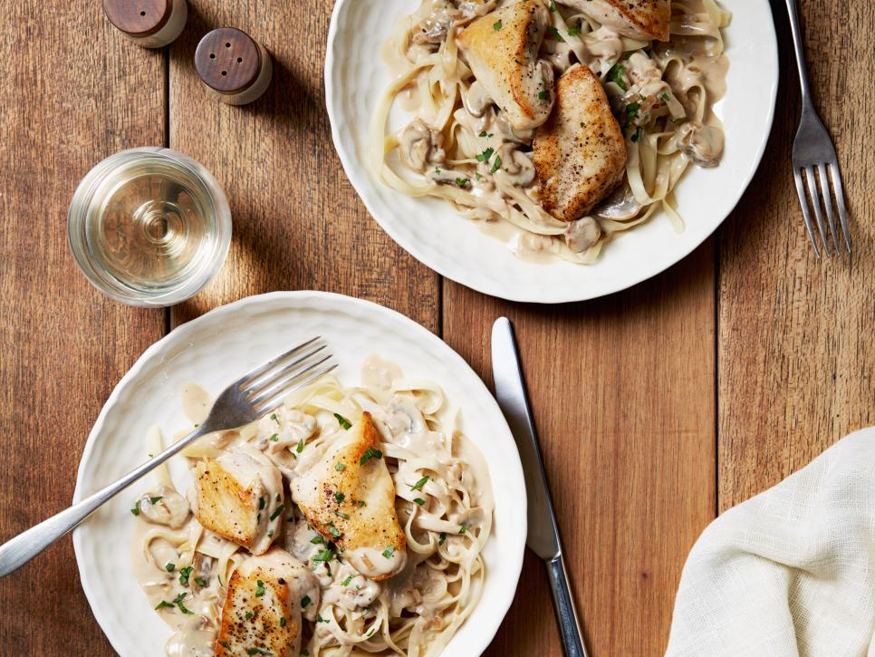

Chicken with Mustard Mascarpone Marsala Sauce

Description
Top fettuccine with juicy chicken breasts and hearty cremini mushrooms cooked in Giada's mascarpone-mustard sauce.
Giada's advice: Use dry Marsala wine to add a little sweetness that's not overpowering.
Ingredients
- 1 1/2 pounds boneless skinless chicken breasts,
each breast cut crosswise into 3 pieces
- Salt and freshly ground black pepper
- 2 tablespoons olive oil
- 5 tablespoons butter, divided
- 3/4 cup chopped onion
- 1 pound cremini mushrooms, sliced
- 2 tablespoons minced garlic
- 1 cup dry Marsala wine
- 1 cup (8 ounces) mascarpone cheese
- 2 tablespoons Dijon mustard
- 2 tablespoons chopped fresh Italian parsley leaves,
plus whole sprigs, for garnish
- 12 ounces dried fettuccine
Steps
- Sprinkle the chicken with salt and pepper. Heat the oil in a heavy large skillet over high heat.
Add the chicken and cook just until brown, about 4 minutes per side. Transfer the chicken to a plate and cool slightly.
- While the chicken cools, melt 2 tablespoons of butter to the same skillet over medium-high heat, then add the onion and saute until tender, about 2 minutes. Add the mushrooms and garlic and saute until the mushrooms are tender and the juices evaporate,
about 12 minutes. Add the wine and simmer until it is reduced by half, about 4 minutes. Stir in the mascarpone and mustard.
Cut the chicken breasts crosswise into 1/3-inch-thick slices. Return the chicken and any accumulated juices to the skillet. Simmer, uncovered, over medium-low heat until the chicken is just cooked through and the sauce thickens slightly, about 2 minutes. Stir in the chopped parsley. Season the sauce, to taste, with salt and pepper.
- Meanwhile, bring a large pot of salted water to a boil. Add the fettuccine and cook until al dente, stirring occasionally, about 8 minutes. Drain. Toss the fettuccine with 3 tablespoons of butter and season, to taste, with salt and pepper.
Swirl the fettuccine onto serving plates. Spoon the chicken mixture over top. Garnish with parsley sprigs and serve.
Return to main page